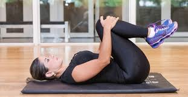

10 exercícios para aliviar a dor nas costas.
Aqui mostramos alguns exercícios e posturas que você pode fazer para fortalecer e aliviar a dor nas costas. Leia com atenção a descrição dos movimentos, e atente-se a entrar e sair das posturas lentamente, pois nossa coluna é frágil, e se você estiver sentindo dor, terá que ter atenção redobrada, ouça seu corpo, e vamos lá nos exercitar!
Pernas na parede, com o bumbum encostado na parede para o alongaento ser efetivo, pode dobrar os joelhos se for mais confortável pra você. Alivia dores na lombar e tensão nas pernas.
2 - Postura da criança.Com os joelhos dobrados e os dedoes do pé juntos, estenda suas mãos até que sua cabeça encoste no chão, ou até onde você conseguir. Além de alongar a coluna, é uma postura extremamente calmante, pode fazer sempre que precisar.
3 - Abraçar os joelhos.Numa posição deitada, você vai segurar seus joelhos com a mão. Essa postura faz com que você consiga encostar sua lombar no chão e diminuir a tensão. Você pode também movimentar suas pernas para um lado e para o outro massageando-a.
 4 - Postura gato/vaca.Numa posição de quatro apoios, você vai abrir o peito levando seu umbigo em direção ao chão e arqueando as costas, em seguida, faça o movimento oposto, empurrando o chão e levando seu umbigo em direção as costas. Assim você consegue alongar as costas, tronco, pesoço, massageia os orgãos internos e a coluna vertebral.
5 Torcer as costas.Sentado no chão com os joelhos levantados, você irá segurar um de seus joelhos com a mão oposta, e a mão que ficará livre será colocada no chão dando apoio a parte de trás de suas costas, repetindo o exercício dos dois lados. É uma torção mais intensa, porém muito eficaz, cria espaço em sua coluna, alivia dores e melhora a postura.
6 - PranchaCom os cotovelos no chão, você irá estender suas pernas e contrair o abdômen, não deixe suas costas descerem, seu corpo deverá formar uma linha reta, fique até onde aguentar. Este exercício promove o fortalecimento do nosso core e também do transverso abdominal, músculos que ajudam a proteger nossa coluna.
7 - Extensão cruzada.Numa posição de quatro apoios, você irá extender um dos braços e uma das pernas do lado oposto, repita o movimento dos dois lados. Promove o fortalecimento da lombar e do core de forma mais leve
8 - Cachorro olhando pra cima.Deitado de bruços com as mãos do lado do corpo, você irá empurrar o chão elevando seu tórax. Essa postura abre espaço na coluna, tórax e fortalece os músculos abdominais e os braços.
9 - Prancha lateral.Deite-se em um dos lados, com as pernas e um dos braços extendidos levante seu quadril. Seu braço tem que estar alinhado com o ombro. Repita o movimento dos dois lados, e mantenha a postura o tempo que conseguir. Se for muito pra você, pode apoiar-se no joelho da perna que está por baixo para facilitar o equilíbrio. Melhora a postura e o equilíbrio, reduzindo o risco de lesões nas articulações, além de fortalecer o abdômen.
10 - Elevação pélvica.Deitado no chão com os joelhos dobrados, eleve seu quadril formando uma linha reta entre os joelhos e a cabeça. Este exercício fortalece o assoalho pélvico, fortalece a lombar, e estabiliza a articulação do quadril.

OBS: O texto não possui fontes da internet pois utilizei meus conhecimentos de Yoga para escrevê-lo